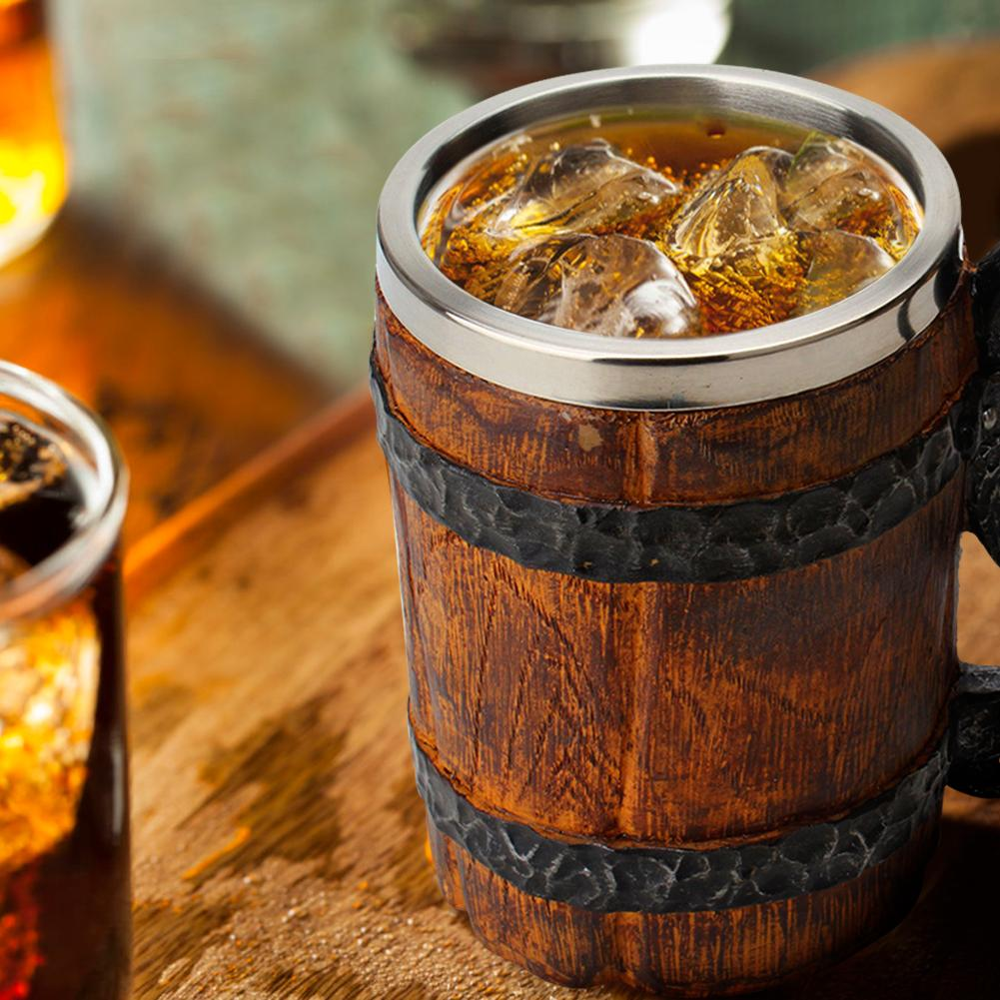

Viking-Style Mead

Description
Mead, a fermented honey-based beverage, was a popular drink among the Vikings. This recipe offers a simplified
version for home brewing.
Ingredients
- 3 lbs honey
- 1 gallon water
- 1 packet wine or mead yeast
- 1/2 cup raisins (optional)
- 1/2 cup orange or lemon zest (optional)
Steps
- In a large pot, heat the honey and water over medium heat, stirring until the honey is fully dissolved. Do
not boil.
- Allow the honey mixture to cool to room temperature, then transfer it to a sterilized fermenting container.
- Add the yeast and any additional flavorings, such as raisins or citrus zest. Seal the fermenting container
with an airlock.
- Allow the mead to ferment for 2-4 weeks, or until the bubbling in the airlock slows down.
- Rack the mead into a secondary fermenting container, leaving any sediment behind. Allow the mead to age for
an additional 2-6 months, or until it reaches your desired flavor and clarity.
- Bottle and enjoy chilled from a Viking Horn.